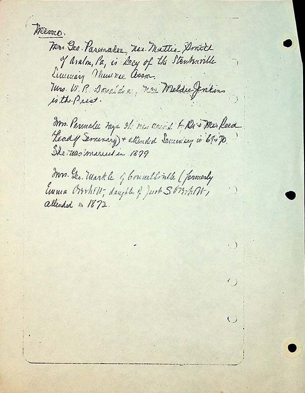

Memo:
Mrs George Parmalee, nee Mattie Smith of Avalon, Pa, is secy of the Steubenville Seminary Alumnie Assn.
Mrs. W. R. Donaldson, nee Meldie Jenkins is the Prest.[sic]
Mrs. Parmalee says she was raised by Dr. & Mrs Reed (head of seminary) & attended seminary in 69 & 70. She was married in 1879.